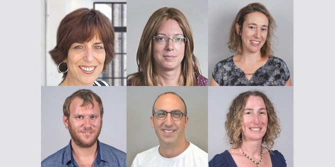

The Mandel Graduate Unit’s series for graduates who have founded educational initiatives based on innovative pedagogical approaches is based on the premise that graduates who share common experiences can serve as a valuable resource for each other. The sessions, which enable peer learning and mutual development, offer graduates an opportunity to create groups of belonging; to share knowledge, successes, dilemmas, and challenges; and to consult with one another. The knowledge, insights, and experience of the group enable its members to examine issues from different perspectives and to suggest alternative interpretations and new courses of action.
The series centers on subjects that are relevant to the graduates’ work and is built in response to needs that arise in the field. Issues and challenges that have been raised for discussion include: documentation; conceptualization and creation of a model for disseminating knowledge while maintaining quality and remaining faithful to the original; developing ideas and growing the initiative while managing a routine heavy workload; creating and adopting a unique language that is used across the organization; implementing a unique new approach and making it accessible; and managing the challenges that arise in relation to parents and the education system when implementing change.

The series maintains the Mandel tradition of moving back and forth between theory and practice. At the first meeting, the graduates briefly presented their educational initiatives, and then took part in a joint study session. Titled “Between the Familiar and the Strange,” the study session was facilitated by Israel Sorek, a graduate of Cohort 2 of the Mandel School for Educational Leadership and a faculty member of the Mandel Center for Leadership in the Negev. The discussion examined the natural human tendency to reject that which is foreign. It pointed out that entrepreneurial work runs counter to this tendency, as entrepreneurs, like artists, transform that which is familiar into something strange. The participants discussed the continuum that runs from familiar to strange and the two-way movement that takes place on it. The participants also explored concepts such as change, development, stagnation, threat, uncertainty, courage, and determination.
Future sessions of the series will similarly focus on the axis of theory and practice, through reflective discourse and discussion. Dr. Ruth Lehavi – faculty member of the Mandel School for Educational Leadership, graduate of its first cohort, and founder of the Keshet School – will facilitate the discussion of the graduates’ initiatives, while Israel Sorek will facilitate the study of the significance of entrepreneurial action in innovation and change.
The following graduates of the Mandel School for Educational Leadership are participating in this series:
- Vered Bachar, founder and director of the Shoshanim Seminar for Arts and Sciences of the Israel Association for the Advancement of Education (Cohort 22)
- Tzipora Gutman, founder and director of Kfar Shira (Shira Village), a residential educational framework for young ultra-Orthodox women (Cohort 24)
- Miriam Leibowitz-Assaraf, founding partner and director of INBAR, the Secular Education Track of the Kerem Institute (Cohort 23)
- Yuval Nevo, principal of the Ramot Alon Middle School in Jerusalem (Cohort 25)
- Shahar Feinstein, founder and principal of the Shapira Neighborhood School in Tel Aviv (Cohort 26)
- Shirley Rosman, founder and principal of the Yitzhak Navon Elementary School in Herzliya (Cohort 25)
The series was developed and is being led by
Ayala Bavly, editing manager at the Mandel Graduate Unit, together with graduates
Dr. Ruth Lehavi, faculty member of the Mandel School of Educational Leadership, and
Israel Sorek, faculty member of the Mandel Center for Leadership in the Negev.
{kind=link}